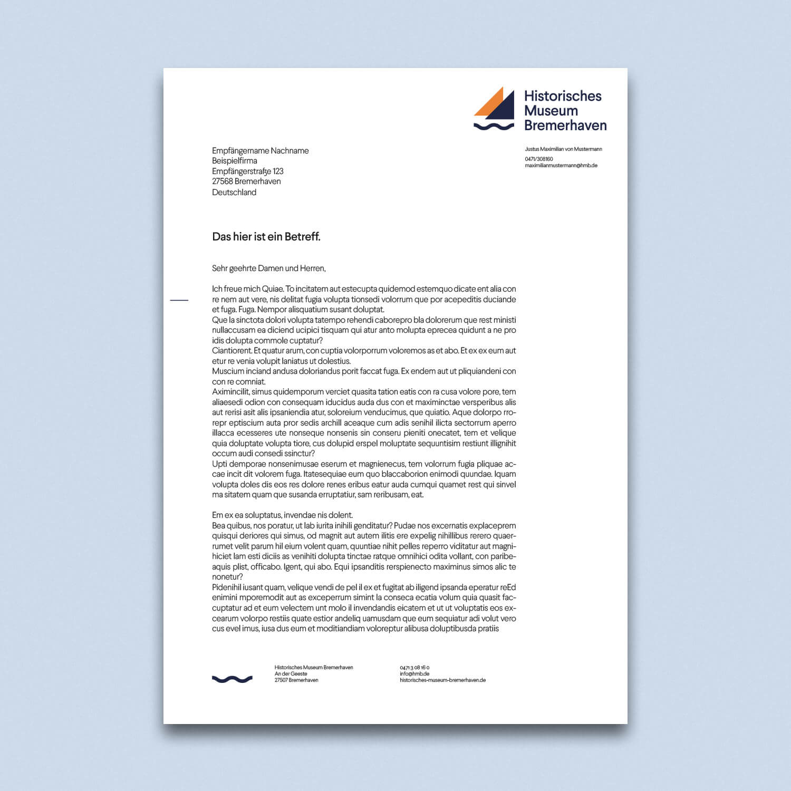
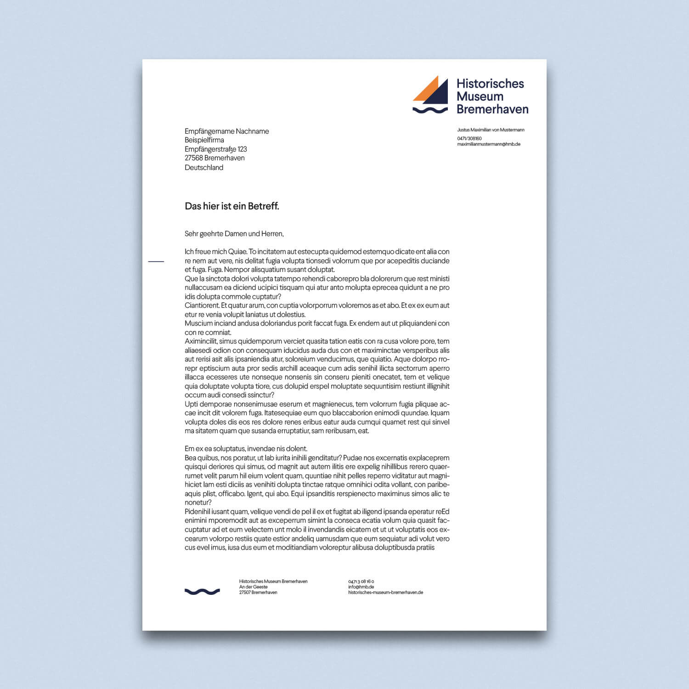
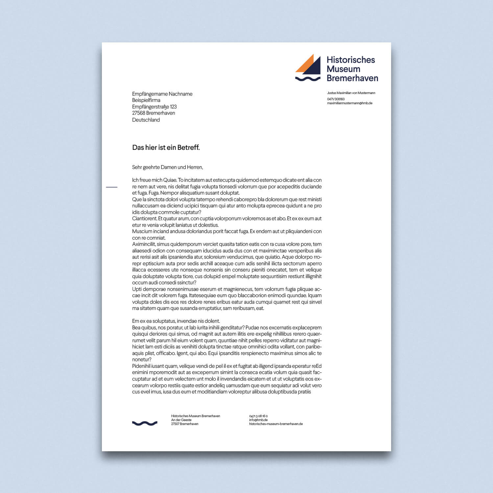

In Zusammenarbeit mit dem Historischen Museum Bremerhavens habe ich
ein Rebranding der bereits vorhandenen Identity vorgenommen. Entstehen
sollte hierbei mindestens ein neues Logo, Visitenkarten und ein
Briefbogen. Außerdem habe ich einen neuen Flyer und eine Posterserie
gestaltet, um die Außenwerbung des Museums zu verstärken.
Mein Ziel war es, die Identität des Museums über das neue Branding
besser zu kommunizieren. So rücken die Themen des Meeres und der
Seefahrt über das neue Logo und die neuen Farben stärker in den
Vordergrund.
Die neuen Farben des Historischen Museums spiegeln Bremerhaven in sich
wieder. Das Tiefseeblau steht für die Nähe zur Nordsee, das Eisgrau für
das manchmal ungemütliche Wetter und den Wind. Kontrastiert werden die
beiden Hauptfarben durch ein Goldgelb und ein Bojenorange.
Das neue Design des Museums lässt bestimmte Freiheiten in der Benutzung
der Farben zu. Das Logo kann zum Beispiel rein in Blau oder zusätzlich
mit Orange benutzt werden. Das beugt Monotonie vor und macht das Design
etwas verspielt.

Der Flyer wurde so gestaltet, dass er dem Betrachter sofort ins Auge
fällt, sogar in der Nachbarschaft anderer Flyer. Der große Blickfang auf
der Coverseite sorgt für einen hohen Kontrast. Darüber hinaus hat der
Flyer eine Zierleiste in Bojenorange, die im geschlossenen Zustand
leicht übersteht.
Mit dem neuen Design präsentiert sich das Historische Museum als ein
modernes und frisches Museum, dass Besucher aller Altersgruppen anlockt.
Das Branding greift Ausstellungsstücke des Museums auf und präsentiert
diese auf der Außenwerbung.